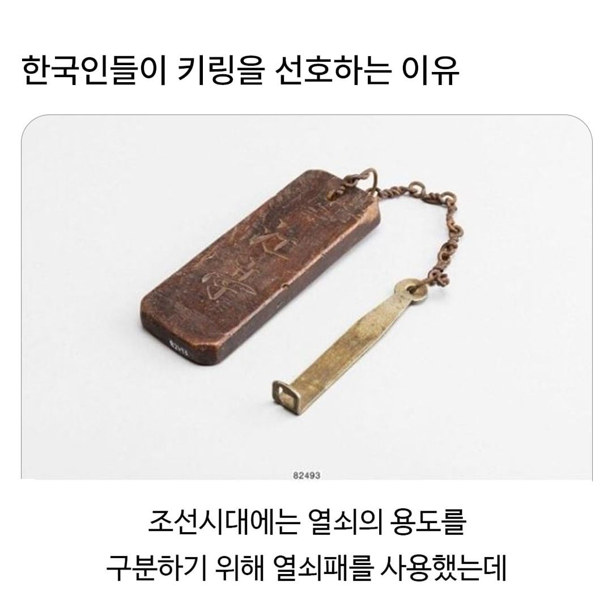
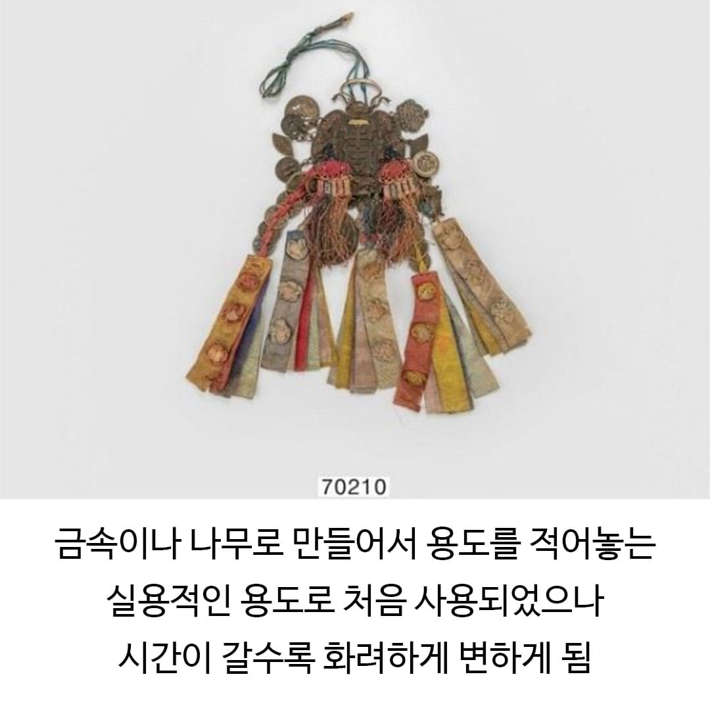
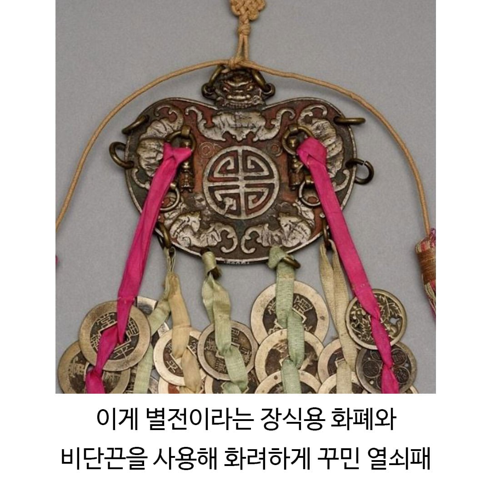
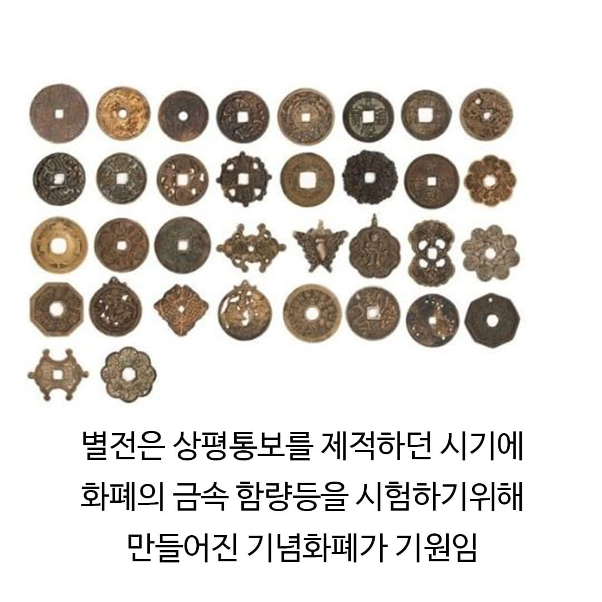
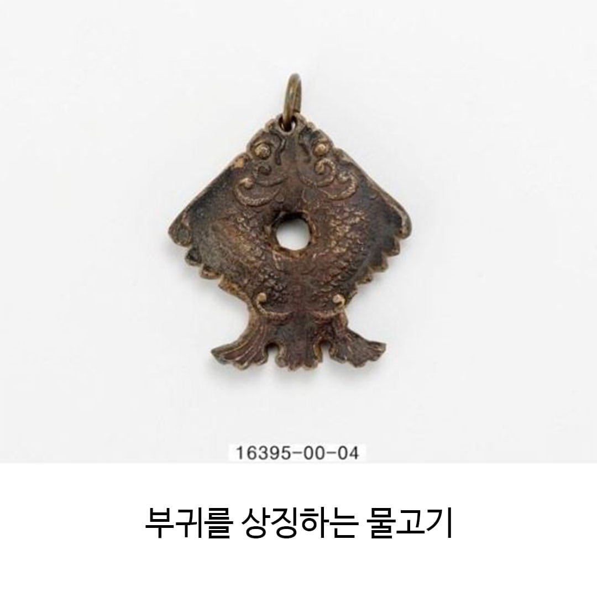
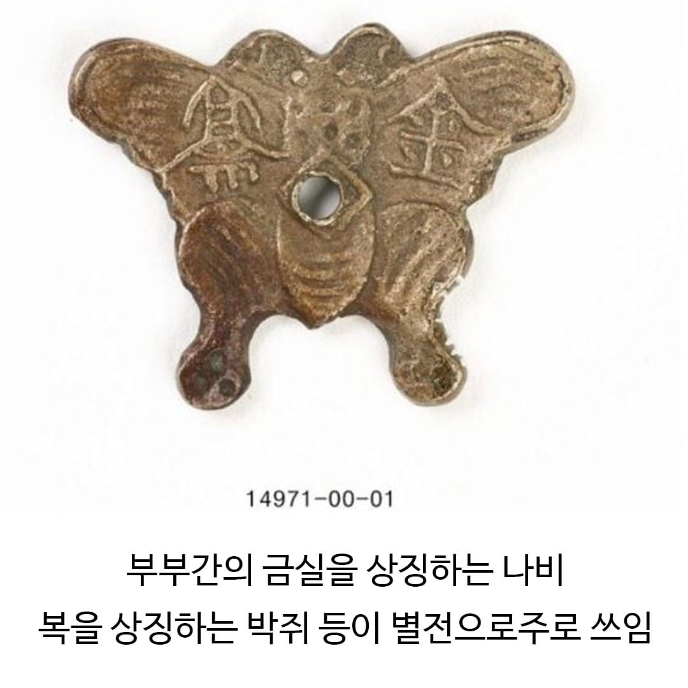
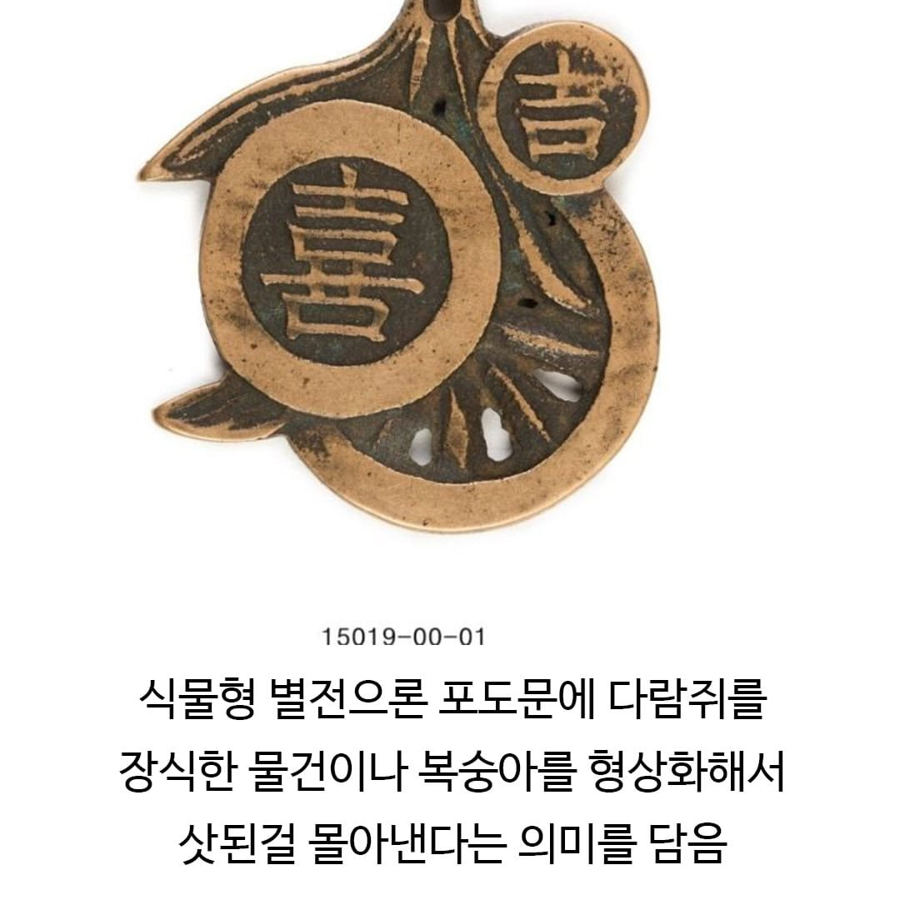
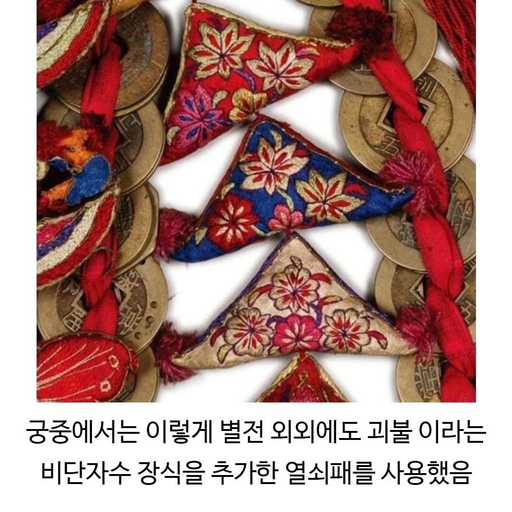
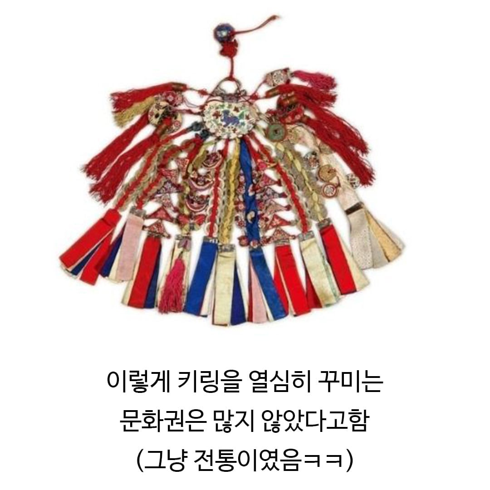

한국인 조상님 DNA가 있음









한국인 조상님 DNA가 있음
이것도 그렇지만 노리개가 제일 유명하지 않나 ㅋㅋ
키링 -> 키가 없음 ㅋㅋ
백링ㅋㅋㅋ
다이소에 카봇버전 질럿, 저글링 봉제인형이나 키링 있으면 바로 사서 걸고다님
자네 호패를 꺼내 보시게, 뭐라? 없다고?
근데 언제부턴가 존나 주렁주렁 달고다니더라.
예전에는 그냥 진짜 길거리에서 나눠주던 물티슈나 휴지 같은 취급이었던거 같은데
키링에 맞으면 뒤질수도있네
회귀하면 먼작귀 키링 만들어서 조선 후기 휩쓸어야지
또 조상님의 얼이었단 말인가?
당장 제삿상을 차려서 조상님을 숭배하지 않을 수 없어!
그러고보니 가방메고 다니는 사람들 대부분 키링하니씩 매달고 다니는게 보통인데 전통이었구나 ㅋㅋㅋ
다꾸이전에 키꾸가 있엇다
다른 나라에선 잘 안하나?
다른 나라는 꾸밀데가 많으니 거기다 투자함.
조선시대땐 꾸미는건 사치다 란 사회적 압력이 있어서 대놓고 여기저기 꾸미질 못하고 대신 키링같이 조그만데다가 욕망을 몰빵해버림
조선시대 신분증인 호패도 열쇠고리 같은 형태였잖아ㅋㅋㅋㅋ
말이 키링이지 다들 노리개처럼 차고 다니잖아 ㅋㅋㅋ
사실상 현대판 노리개 ㅋㅋ
은장도도 간지템으로 들고 다니는거라 애들한테는 칼날 없는 공갈칼이라도 채워줌ㅋㅋㅋ
무게가 상당하겠는데 ㅋㅋㅋ